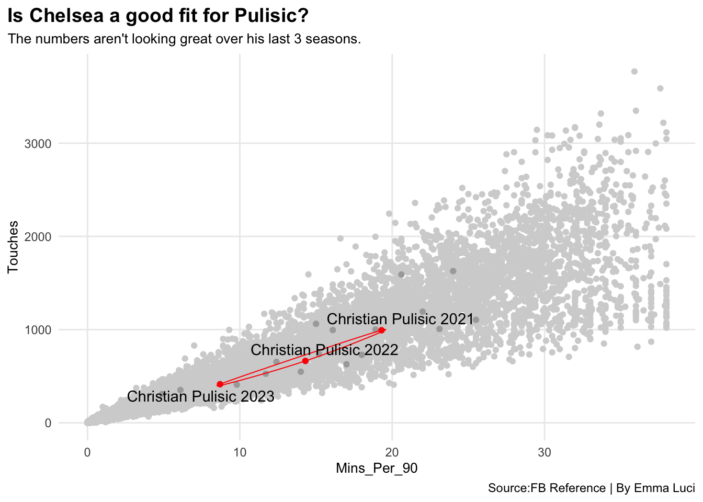

Code
library(tidyverse)
library(worldfootballR)
library(ggalt)
library(ggrepel)library(tidyverse)
library(worldfootballR)
library(ggalt)
library(ggrepel)Christian Pulisic, nicknamed Captain America by US fans, has been a men’s national team star for years, but is he the best? If you don’t know who he is, you should. The poster boy from the World Cup ’22 in Qatar, and compared to as the “Gareth Bale of Wales” from World Soccer Talk, Pulisic is known for his talents and for making his own way up through the ranks of Borrisa Dortmund from the age of 16. Eddie Johnson, a former US player who retired in 2015 said that Pulisic is the best player that he has seen since playing soccer as a kid in the States, and Johnson had played with big names like Claudio Reyna, Clint Dempsey, and Landon Donovan. “Where he’s at now, with his experience and how he sees the game he’s miles ahead of everyone else,” Johnson said. Fans of Pulisic are dismayed with his move to Chelsea, with there being a bias against American players in Europe where their talent and potential often is amounted to much less hype in the foreign country. Because of Pulisic’s natural talent, he should be starting for a top club. Unfortunately, his move to Chelsea is the last thing that he needed, going to a club that is notorious for often dispensing coaches. Since his time at Chelsea, he has seen three different coaches, none of which have trusted him to be a starter.
big5_player_shooting <- fb_big5_advanced_season_stats(season_end_year= c(2021:2023), stat_type= "shooting", team_or_player= "player")big5_player_possession <- fb_big5_advanced_season_stats(season_end_year= c(2021:2023), stat_type= "possession", team_or_player= "player")big5_player_passing <- fb_big5_advanced_season_stats(season_end_year= c(2021:2023), stat_type= "passing", team_or_player= "player")americans <- c("Christian Pulisic", "Weston McKennie","Gio Reyna", "Tyler Adams", "Brenden Aaronson", "Timothy Weah","Kellyn Acosta","Yunus Musah" )americapassing <- big5_player_passing %>% filter(Player %in% americans)
americashooting <- big5_player_shooting %>% filter(Player %in% americans)
americapossession <- big5_player_possession %>% filter(Player %in% americans)
americanjoined <- americapassing %>% inner_join(americashooting)#goals and assists of each player in stacked bar chart
goalsandassists <- americanjoined %>%
group_by(Player) %>%
summarize(
Goals = sum(Gls_Standard, na.rm=TRUE),
Assists = sum(Ast)
) %>%
pivot_longer(cols=-Player, names_to = "Type", values_to = "Count")
ggplot() +
geom_bar(
data=goalsandassists,
aes (x=reorder(Player, Count), weight=Count, fill= Type)) +
coord_flip() +
labs(
title="Who is the best player goals and assists wise?",
subtitle="Apparently Adams and Aaronson are not goal scorers.",
caption="Source:FB Reference | By Emma Luci",
x="",
y="") +
theme_minimal() +
theme(
plot.title = element_text(size = 12, face = "bold"),
axis.title = element_text(size = 8),
plot.subtitle = element_text(size=10),
panel.grid.minor = element_blank(),
plot.title.position = "plot"
) 
Even though his talents are overlooked in Europe, dedicated US fans that have followed his journey know how skilled he is and the potential as a player that he holds still in club play. As a member of the national team, Pulisic has had great success since 2016. Compared to top players Reyna, McKennie, Weah, Musah, Aaronson, and Adams, Pulisic holds his own as a top goal-scorer and with assisted goals in games. Yet, Gio Reyna somehow has him beat numbers-wise in this area by just by a bit on the assists side, which could be expected in some instances. Players like Weah, Musah, Aaronson, and Adams seem to be more dominant in their assists as well, playing both midfield and forward positions on the pitch.
#Encircling on scatter plot to show who the best touches of American players
pulisic <- americapossession %>% filter(Player == "Christian Pulisic" | Player == "Gio Reyna")
ggplot() +
geom_point(data=big5_player_possession, aes(x=Mins_Per_90, y=Touches_Touches), color="grey") +
geom_point(data=americapossession, aes(x=Mins_Per_90, y=Touches_Touches), color="black") +
geom_encircle(data=pulisic, aes(x=Mins_Per_90, y=Touches_Touches), s_shape=0, expand=0, colour="red") +
geom_text_repel(data=pulisic, aes(x=Mins_Per_90, y=Touches_Touches, label="pulisic")) +
labs(
title="Which player has the best number of touches?",
subtitle=" Shockingly, we see that Pulisic and Reyna are not at the top.",
caption="Source:FB Reference | By Emma Luci",
x="Mins_Per_90",
y="Touches") +
theme_minimal() +
theme(
plot.title = element_text(size = 14, face = "bold"),
axis.title = element_text(size = 10),
plot.subtitle = element_text(size=10),
panel.grid.minor = element_blank(),
plot.title.position = "plot"
) 
Where I expected Pulisic to thrive, he was not. It comes down to the issue that national play is not the same as for European clubs. Number of touches obviously can only be calculated from the number of playing time that someone is getting for their team. Pulsic barely gets playing time at Chelsea, so how are we supposed to think that this data can give an accurate representation of the player he is when he plays for the US? It doesn’t add up. Also, players in different positions are able to thrive differently.
#bar chart of each player to compare their worth to the teams that they play for outside of the US
teams <- big5_player_shooting %>%
filter(Squad %in% americanjoined$Squad) %>%
filter(Season_End_Year == 2023) %>%
filter(xG_Expected >= 3) %>%
mutate(Squad =
case_when(
Squad == "Leeds United" ~ "LEE",
Squad == "Chelsea" ~ "CHE",
Squad == "Dortmund" ~ "DOR",
Squad == "Juventus" ~ "JUV",
Squad == "Lille" ~ "LIL",
Squad == "RB Leipzig" ~ "RBL",
Squad == "Valencia" ~ "VAL"
)
)
americanbar <- teams %>% filter(Nation == "USA")
ggplot() +
geom_bar(
data=teams,
aes(
x=reorder(Player, xG_Expected),
weight=xG_Expected
), fill= "light grey") +
geom_bar(
data=americanbar,
aes(
x=reorder(Player, xG_Expected),
weight=xG_Expected
), fill="blue") +
coord_flip() +
facet_grid(Squad ~ ., scales="free", space="free") +
labs(
title="What player is the most valuable to their club team?",
subtitle="We only see Aaronson and Reyna here.",
caption="Source:FB Reference | By Emma Luci",
x="",
y="Expected Goals") +
theme_minimal() +
theme(
plot.title = element_text(size = 12, face = "bold"),
axis.title = element_text(size = 8),
plot.subtitle = element_text(size=10),
panel.grid.minor = element_blank(),
axis.text.y = element_text(size=7),
plot.title.position = "plot"
) All of these well-known United States players are also unique in their skill sets that they are able to transfer over when they go and play for their club teams. When looking at Chelsea, Dortmund, Juventus, Leeds United, Lille, RB Leipzig, and Valencia we see that the only two American players who showed up were Gio Reyna and Brenden Aaronson. It is cool as a US fan to see your favorite players’ flexibility in European clubs, and to see how they can change as a player when they’re with people that they don’t play and train with all the time. But, when we look at just club play stats only, it doesn’t seem to be a fair matchup for our beloved american players. Not discrediting Leeds or Dortmund whatsoever, I just think that the rest of the players that didn’t show up in the chart have the potential to be just as great as the guys that did make the cut.
Overall, when we look at data across the board from Europe and America, Pulisic is not techinally numbers-wise the “best” under all of these circumstances. But I honestly think that if we were to look at data of just his time playing for the United States national team since he was 16, we could see that he is one of the greatest players this country has ever seen.